HighRadius · 2021 · Enterprise SaaS for collections teams
Autonomous Collections
HighRadius's collections product was capable but nearly a decade old: dense, dated, and hard to scan. As lead designer I rebuilt it from the ground up as CLS 2.0, an AI-assisted workspace that turns raw receivables data into a clear next action, by voice, touch, or click.
- Role
- Lead designer (research, concept, visual design)
- Team
- Two-person design team, with product and engineering
- Timeline
- 2021
- Domain
- Fintech, order-to-cash and accounts receivable

Why it mattered
The problem
A decade-old product fighting its own users
Collections analysts chase overdue invoices all day: find who owes, work the risky accounts first, make the calls, and log every promise to pay. The tool meant to help was designed almost ten years earlier. It was precise with numbers but blind to insight, cluttered with flashy elements, and built on an aging Ext JS stack that capped what the experience could become. So I treated this as a fresh product, not a reskin, and named it CLS 2.0.
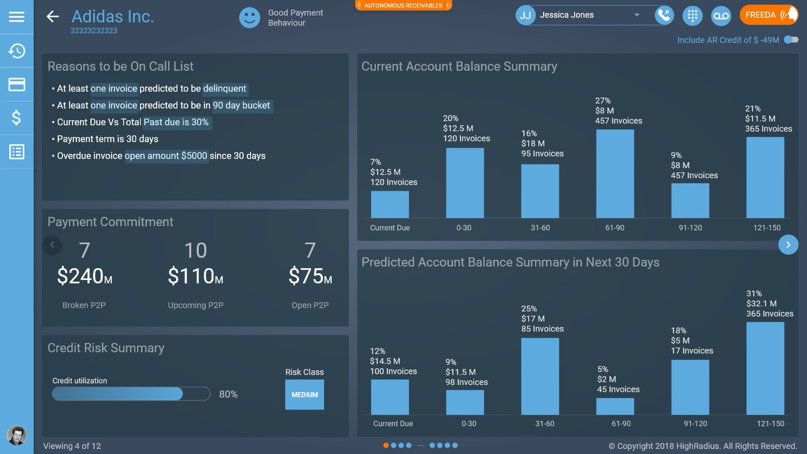
Research
Listening before redrawing
I started where the friction lived. I ran user interviews and contextual inquiries, read product analytics, and studied competitors to separate real needs from assumptions. The principle we held onto: design for the user, not for ourselves. A few findings set the direction.
-
Outdated and flashy
Almost everyone described the look and feel as dated and poorly structured, with type and elements that felt too loud for all-day use.
-
89% wanted more at a glance
Nearly nine in ten asked for more of the data points they need to finish daily tasks, surfaced up front instead of dug out.
-
76% wanted to work in place
Three in four wanted lightweight tools, like notes, inside the product rather than scattered across sticky notes and calendars.
-
An aging platform
The legacy stack limited performance and interaction, which made a ground-up rebuild the honest answer.
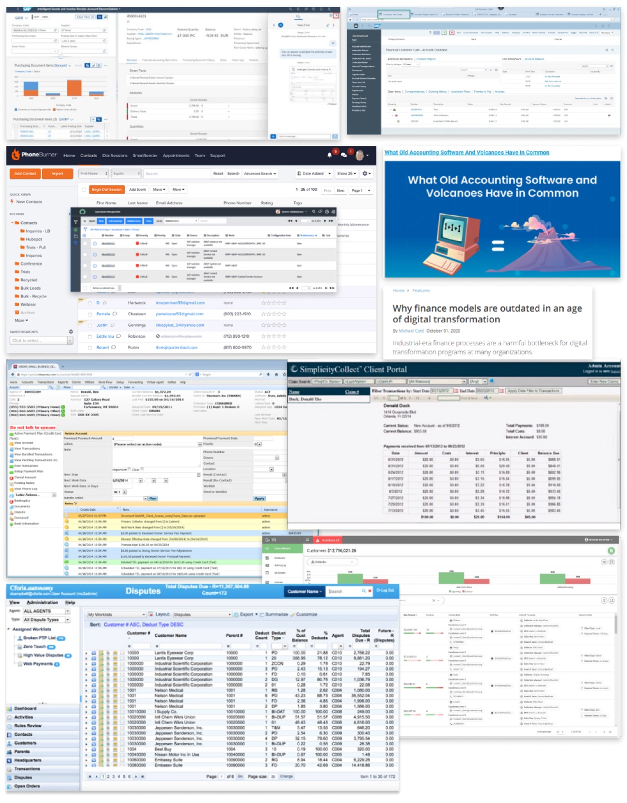
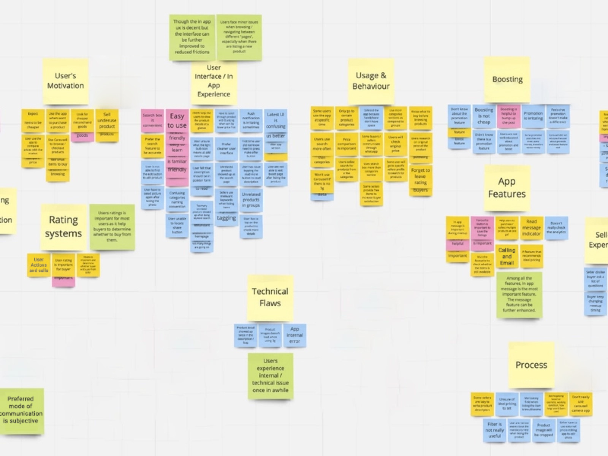
Synthesis pointed at two people the product had to serve well. I wrote them up as personas to keep the team anchored to real goals and constraints.
Works smart and fast against daily targets, then heads home to family. Dense numeric dashboards strain his eyes, so scanning quickly matters as much as the numbers themselves.
Career-oriented and tech-forward. She embraces automation that makes her day easier and values clear feedback and recognition for the work she puts in.
The redesign principles
Assist, enable, motivate, manage, measure
From the opportunities we mapped, the product made a single promise: take the busywork off the analyst so they can focus on the conversation that actually recovers cash. AI reads the raw data and surfaces it thoughtfully, the interface stays calm and predictable, and progress is always visible. Those goals became five design principles the whole system answers to.
Information architecture
One spine for the whole journey
Before any pixels, I stitched the flow together so navigation stayed obvious from login to wrap-up. A workboard opens the day, a worklist orders the work, every customer rolls up into one detail spine (overview, invoices, payments, communications, details), and calls resolve into a post-call wrap-up and summary, then the loop repeats.
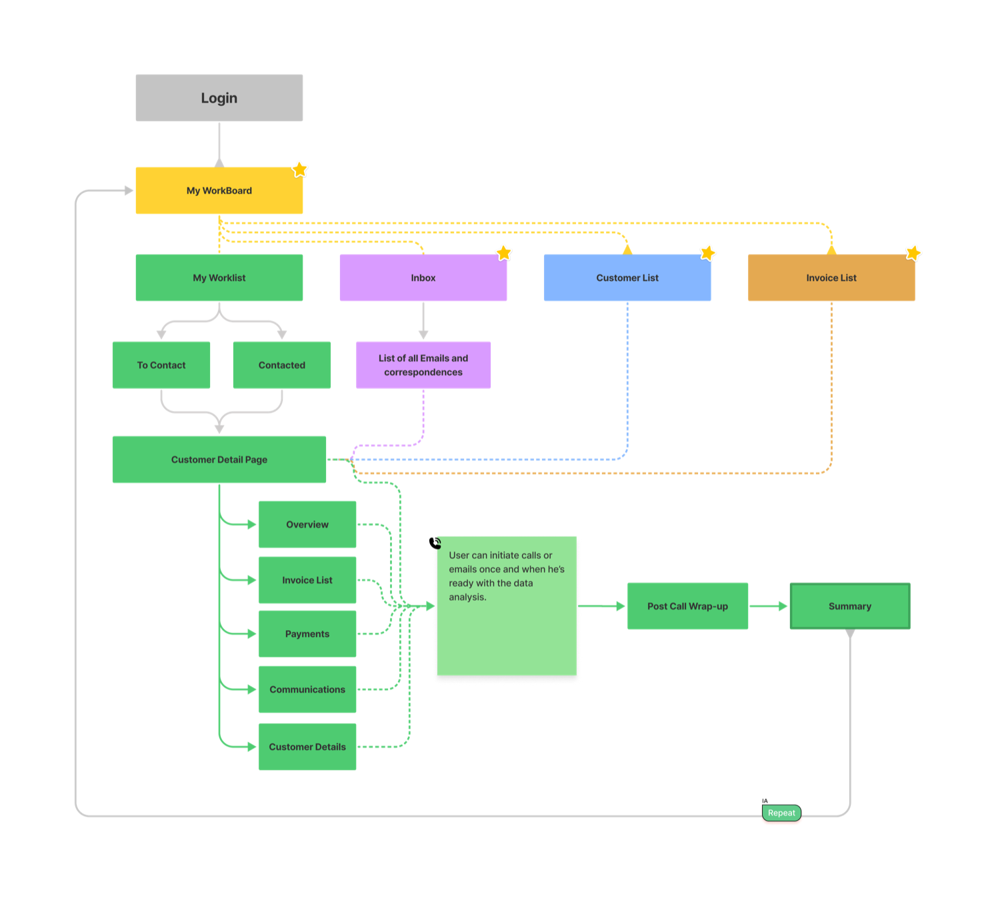
The product, screen by screen
From a busy table to a guided day
The redesign is ten core screens working as one system. It opens on a command center, narrows to a prioritized worklist, then drills into a full customer 360 and the tools to work a call end to end.
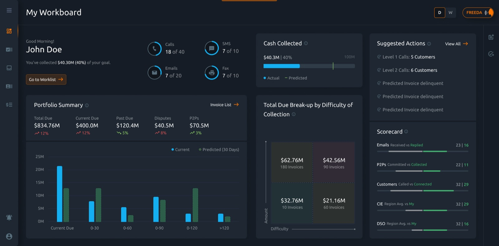
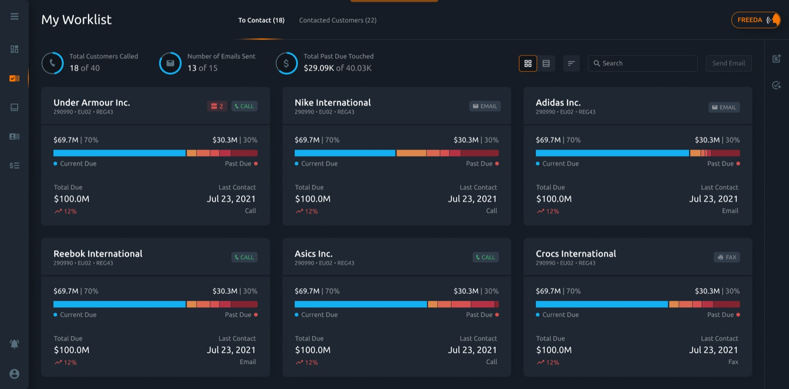
The customer 360
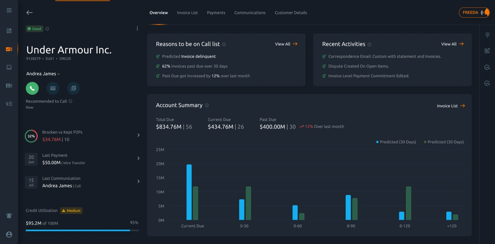
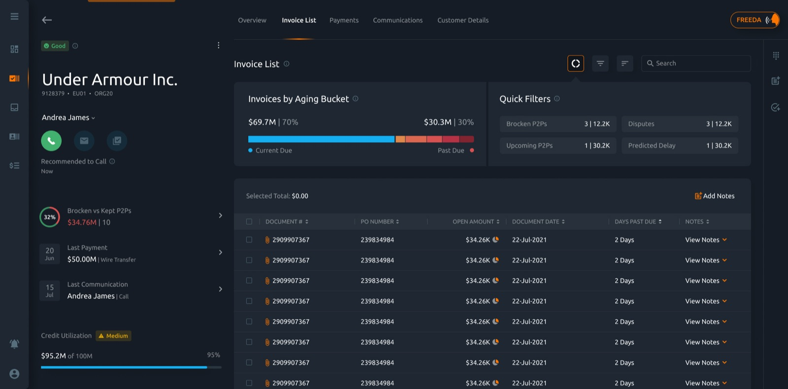
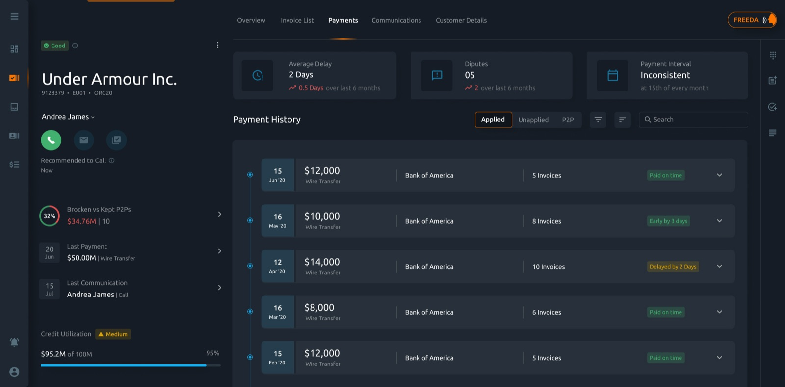
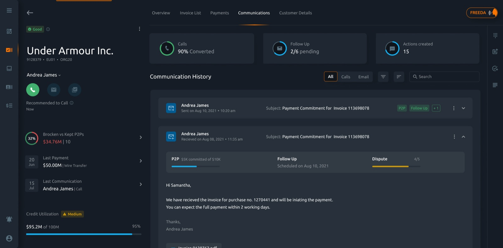
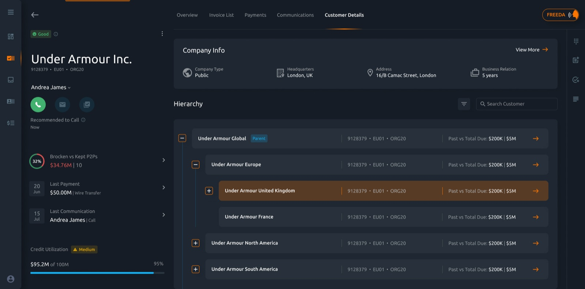
Working a call, end to end
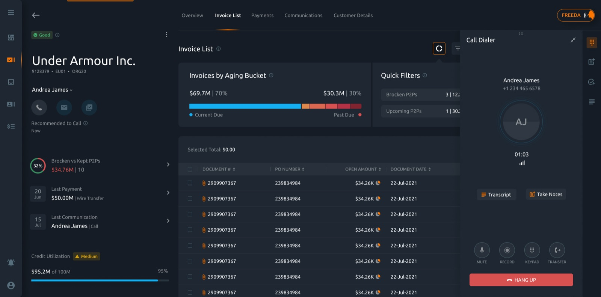
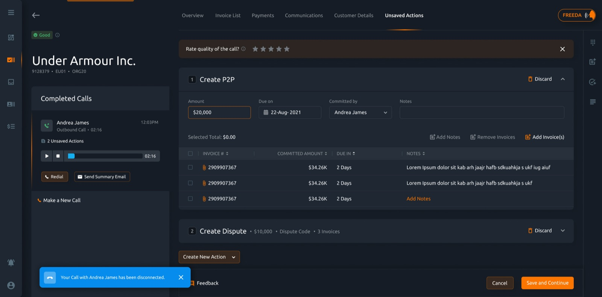
Freeda, voice & touch
An assistant built for how people actually work
Analysts increasingly work on touch-capable laptops and want to move without hunting through menus. So the product was optimized for a touch-and-voice framework, and given its own assistant, Freeda. Ask in plain language, like "show me all customers with past due over ten thousand dollars," and the worklist filters itself; Freeda can open an account or kick off a task, by voice or by tap.
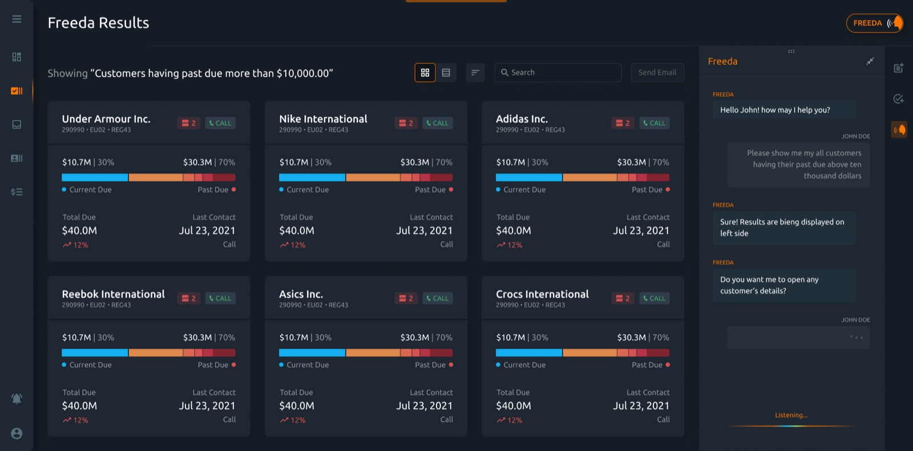
Voice is the next major disruption in computing.Max Amordeluso, then EU head of the Alexa Skills Kit, a reference point as we designed for voice
Craft decisions
The details that made it usable
-
Insight over raw data
Periodic trends and behavioral signals surfaced as concise, AI-driven findings, so analysts decide faster instead of reading tables.
-
CTAs with room to breathe
Primary actions sit where the task expects them, with negative space around them, making the flow predictable and quick.
-
Readable in the dark
A dark base drawn from the brand blue and black, tuned to hold a 4.5:1 contrast minimum so long sessions do not strain the eyes.
-
A linear path
The journey simplified toward a near-straight line, cutting fuss at each step and clarifying the critical touchpoints.
Visual system
A calm, dark-first palette
Analysts live in this product, so the visual system had to feel fresh without tiring the eyes. I derived a dark base from the brand's blue and black, lifted surfaces with a 5% wash of bluish white for elevation, and reserved a warm orange for the actions that matter most. Type is Ubuntu, set for legibility at small sizes across dense screens.
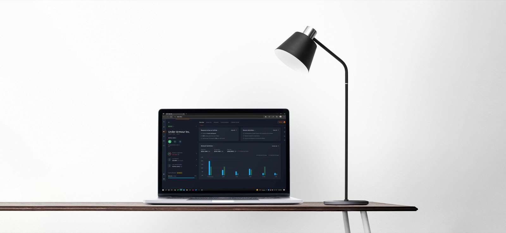
Outcome
A product analysts could actually live in
The collections product was fully redesigned: a refined interaction model, new functionality, resolved accessibility issues, and AI-driven insight woven through. Disparate tools, the sticky notes, reminders, and calendars, folded into one workspace, so analysts could focus on the work instead of the workaround.
Replatform
Rebuilt a decade-old product as CLS 2.0 on a modern stack, redesigning experience and interface together.
Consolidate
Folded notes, reminders, and calls into one screen, removing the disparate side-tools analysts relied on.
Recover faster
HighRadius reported up to 75% faster receivables recovery in a 2021 survey, with stronger automated dunning and calls.
Land well
The redesign was warmly received across global collections teams.
There may be a better solution out there, but I designed an experience that works well for the people who use it every day, and that is the part I am proudest of.